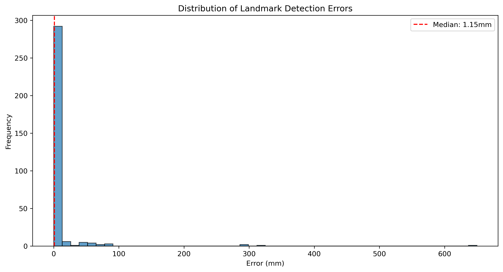
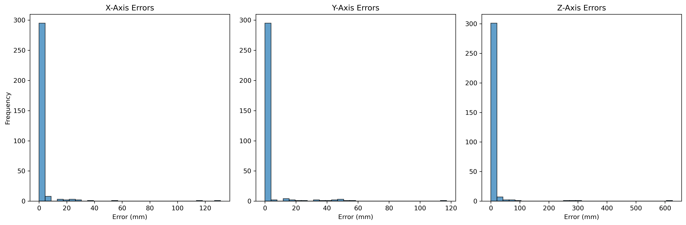
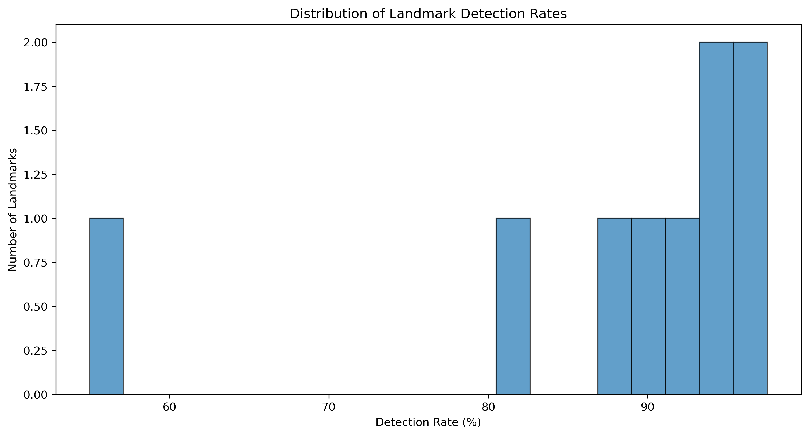
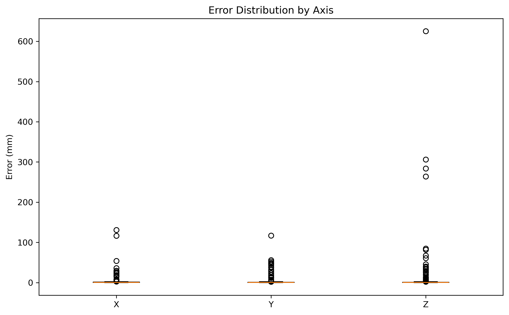
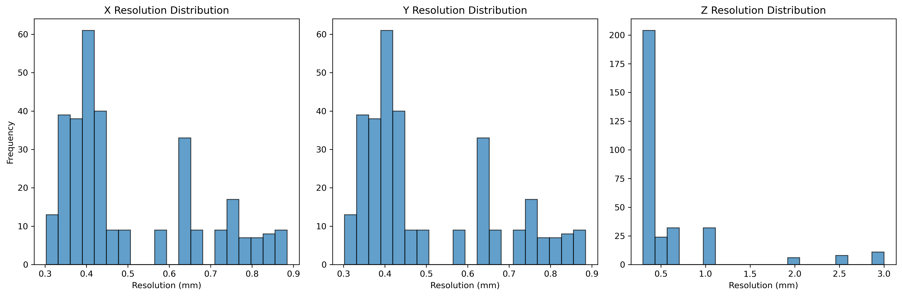
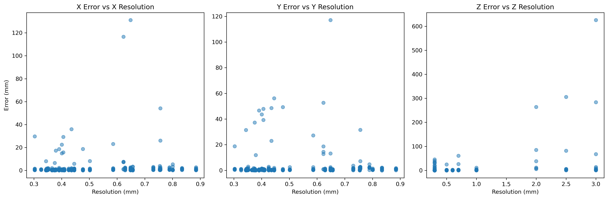
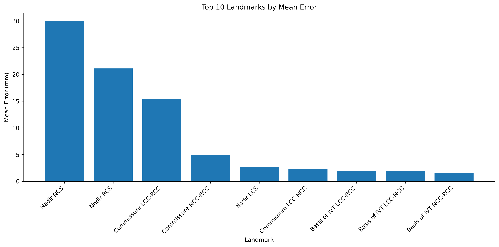

Overall Summary ?
This section provides key metrics summarizing the model's performance across all landmarks and cases.
Total Landmarks Analyzed: 9
Average Detection Rate: 88.06%
Median Detection Rate: 92.50%
Mean Error: 9.47 mm
Median Error: 1.15 mm
Standard Deviation: 47.65 mm
5mm Inlier Rate: 88.96%
Visualization Plots ?
Visual representations of error distributions and model performance metrics.
Error Distribution
Distribution of landmark detection errors across all cases

Axis-specific Error Distribution
Error distributions broken down by anatomical axis (X, Y, Z)

Detection Rate Distribution
Distribution of detection rates across landmarks

Error Boxplot
Box plot showing error distributions by axis

Resolution Distribution
Distribution of image resolutions across dataset

Error vs Resolution
Relationship between detection errors and image resolution

Top 10 Landmarks by Error
Landmarks with the highest mean detection errors

Landmark Detection Summary
?
Detailed performance metrics for each individual landmark, including detection rates and error statistics.
| Landmark |
Detection Rate (%) |
Detected/Total |
Mean Error (mm) |
X Error (mm) |
Y Error (mm) |
Z Error (mm) |
Median Error (mm) |
Max Error (mm) |
5mm Inlier Rate (%) |
| Nadir LCS |
97.50% |
39/40 |
2.68 |
1.00 |
1.16 |
1.79 |
1.41 |
41.47 |
92.31 |
| Nadir NCS |
97.50% |
39/40 |
30.01 |
9.46 |
12.36 |
22.11 |
2.08 |
312.31 |
71.79 |
| Basis of IVT LCC-NCC |
95.00% |
38/40 |
1.95 |
0.76 |
0.39 |
1.53 |
0.85 |
25.11 |
94.74 |
| Basis of IVT LCC-RCC |
95.00% |
38/40 |
2.01 |
0.69 |
1.06 |
1.14 |
0.85 |
20.78 |
94.74 |
| Commissure LCC-RCC |
92.50% |
37/40 |
15.37 |
1.98 |
3.73 |
13.38 |
1.41 |
286.09 |
83.78 |
| Basis of IVT NCC-RCC |
90.00% |
36/40 |
1.54 |
0.62 |
0.97 |
0.70 |
1.03 |
17.29 |
97.22 |
| Nadir RCS |
87.50% |
35/40 |
21.10 |
4.95 |
4.27 |
19.68 |
0.94 |
649.68 |
91.43 |
| Commissure NCC-RCC |
82.50% |
33/40 |
4.97 |
2.11 |
1.06 |
3.78 |
1.26 |
86.25 |
87.88 |
| Commissure LCC-NCC |
55.00% |
22/40 |
2.28 |
1.35 |
0.60 |
1.13 |
1.24 |
9.55 |
86.36 |